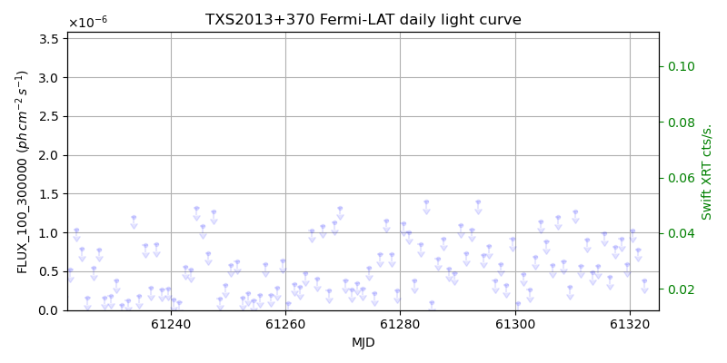
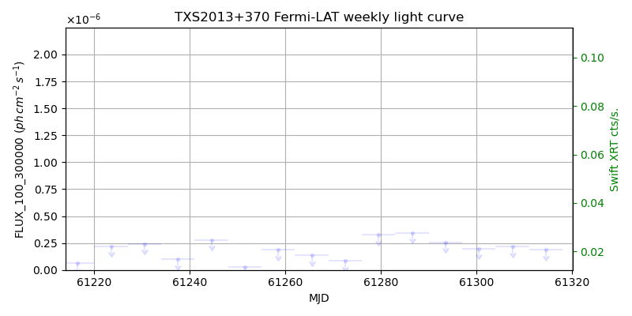
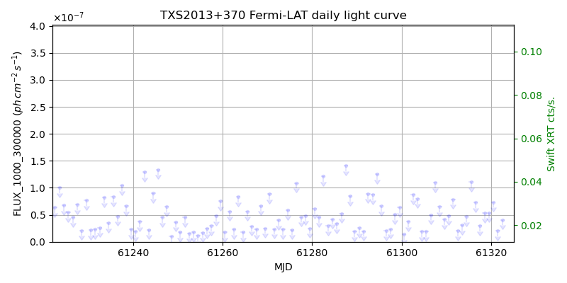
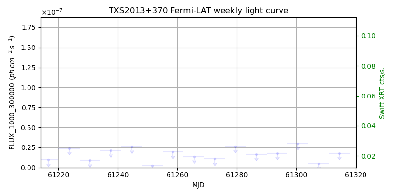

LAT Lightcurve site: https://fermi.gsfc.nasa.gov/ssc/data/access/lat/msl_lc/source/TXS_2013p370
Swift site: https://www.swift.psu.edu/monitoring/source.php?source=TXS2013+370
NED: Query
Time of last update of this page: UT: 2026-10-10 15:27 (MJD: 61323.644)
| Property | Value |
|---|---|
| R.A. | 20:15:28.80 |
| Dec. | 37:10:58.8 |
| z | 0.858 |
| 3FGL SpectrumType | |
| 3FGL PL Index | -1.00 |
| 3FGL Flux_100_300000 | -1.00e+00 |
| 3FGL Flux_1000_300000 | -1.00e+00 |
| 3FGL Flux >200 GeV | -1.00e+00 |
| 3FGL Extrap. Crab >200 GeV | -1.00 |
| 3FGL Flux After EBL Absorption >200GeV | -1.00e+00 |
| 3FGL EBL Crab Fraction >200GeV | -1.00 |

| MJD | dMJD | Flux | dFlux | Frac3FGL | FracCrab>200GeV | EBLFracCrab>200GeV |
|---|---|---|---|---|---|---|
| 61318.50 | 0.50 | 9.19e-07 | 0.00e+00 | 0.00 | 0.00 | -0.00 |
| 61319.50 | 0.50 | 5.88e-07 | 0.00e+00 | 0.00 | 0.00 | -0.00 |
| 61320.50 | 0.50 | 1.03e-06 | 0.00e+00 | 0.00 | 0.00 | -0.00 |
| 61321.50 | 0.50 | 7.85e-07 | 0.00e+00 | 0.00 | 0.00 | -0.00 |
| 61322.50 | 0.50 | 3.79e-07 | 0.00e+00 | 0.00 | 0.00 | -0.00 |

| MJD | dMJD | Flux | dFlux | Frac3FGL | FracCrab>200GeV | EBLFracCrab>200GeV |
|---|---|---|---|---|---|---|
| 61286.50 | 3.50 | 3.45e-07 | 0.00e+00 | 0.00 | 0.00 | -0.00 |
| 61293.50 | 3.50 | 2.56e-07 | 0.00e+00 | 0.00 | 0.00 | -0.00 |
| 61300.50 | 3.50 | 1.98e-07 | 0.00e+00 | 0.00 | 0.00 | -0.00 |
| 61307.50 | 3.50 | 2.19e-07 | 0.00e+00 | 0.00 | 0.00 | -0.00 |
| 61314.50 | 3.50 | 1.86e-07 | 0.00e+00 | 0.00 | 0.00 | -0.00 |

| MJD | dMJD | Flux | dFlux | Frac3FGL | FracCrab>200GeV | EBLFracCrab>200GeV |
|---|---|---|---|---|---|---|
| 61318.50 | 0.50 | 5.34e-08 | 0.00e+00 | 0.00 | 0.00 | -0.00 |
| 61319.50 | 0.50 | 5.37e-08 | 0.00e+00 | 0.00 | 0.00 | -0.00 |
| 61320.50 | 0.50 | 7.37e-08 | 0.00e+00 | 0.00 | 0.00 | -0.00 |
| 61321.50 | 0.50 | 2.07e-08 | 0.00e+00 | 0.00 | 0.00 | -0.00 |
| 61322.50 | 0.50 | 4.09e-08 | 0.00e+00 | 0.00 | 0.00 | -0.00 |

| MJD | dMJD | Flux | dFlux | Frac3FGL | FracCrab>200GeV | EBLFracCrab>200GeV |
|---|---|---|---|---|---|---|
| 61286.50 | 3.50 | 1.65e-08 | 0.00e+00 | 0.00 | 0.00 | -0.00 |
| 61293.50 | 3.50 | 1.77e-08 | 0.00e+00 | 0.00 | 0.00 | -0.00 |
| 61300.50 | 3.50 | 2.99e-08 | 0.00e+00 | 0.00 | 0.00 | -0.00 |
| 61307.50 | 3.50 | 4.97e-09 | 0.00e+00 | 0.00 | 0.00 | -0.00 |
| 61314.50 | 3.50 | 1.79e-08 | 0.00e+00 | 0.00 | 0.00 | -0.00 |
--------------------------------------------------------- Using user-supplied coords: 20:15:28.80 37:10:58.8 2000 --------------------------------------------------------- FLWO UT night of: 2026-10-11 Local Sid. @ Midnight: 00:55 Sunset (-15.0) (local, UT): 19:04 02:04 Sunrise (-15.0) (local, UT): 05:18 12:18 Moonrise (local, UT): Moonset (local, UT): Moon phase: 0.01 --------------------------------------------------------- AzTime LSID UT Obj_el Obj_az Mn_el Mn_az Sep. --------------------------------------------------------- 19:04 19:58 02:04 83.3 31.6 -16.1 264.2 110.1 19:34 20:29 02:34 83.8 336.0 -22.3 267.8 109.9 20:04 20:59 03:04 79.6 305.4 -28.5 271.5 109.7 20:34 21:29 03:34 74.0 295.5 -34.7 275.4 109.5 21:04 21:59 04:04 68.2 291.9 -40.8 279.7 109.3 21:34 22:29 04:34 62.2 290.8 -46.8 284.6 109.1 22:04 22:59 05:04 56.2 290.9 -52.7 290.5 108.9 22:34 23:29 05:34 50.3 291.8 -58.4 297.7 108.7 23:04 23:59 06:04 44.3 293.1 -63.6 307.3 108.5 23:34 00:29 06:34 38.5 294.7 -68.1 320.3 108.3 00:04 00:59 07:04 32.7 296.7 -71.3 338.2 108.1 00:34 01:29 07:34 27.1 298.9 -72.6 0.4 107.8 01:04 01:59 08:04 21.6 301.4 -71.5 22.7 107.6 01:34 02:30 08:34 16.2 304.2 -68.3 40.8 107.4 02:04 03:00 09:04 11.0 307.3 -63.9 54.1 107.2 02:34 03:30 09:34 6.1 310.6 -58.7 63.8 107.0 03:04 04:00 10:04 1.6 314.3 -53.1 71.2 106.8 03:34 04:30 10:34 -1.9 318.3 -47.3 77.2 106.6 04:04 05:00 11:04 -7.2 322.7 -41.4 82.2 106.4 04:34 05:30 11:34 -10.9 327.5 -35.3 86.6 106.2 05:04 06:00 12:04 -14.1 332.7 -29.2 90.6 106.1 05:18 06:14 12:18 -15.4 335.2 -26.5 92.4 106.0 --------------------------------------------------------- Dark hours >55 deg.: 3.10 srcstart (UT): 2026-10-11 02:04 srcend (UT): 2026-10-11 05:10